서로 다른 이야기가,
한곳에 머물다.
강화성당에서 만난 공간과 상징, 함께 심었던 나무의 이야기.
발로가 읽은 장소의 의미가 향과 디자인,
일상의 물건으로 이어지는 과정을 소개합니다.
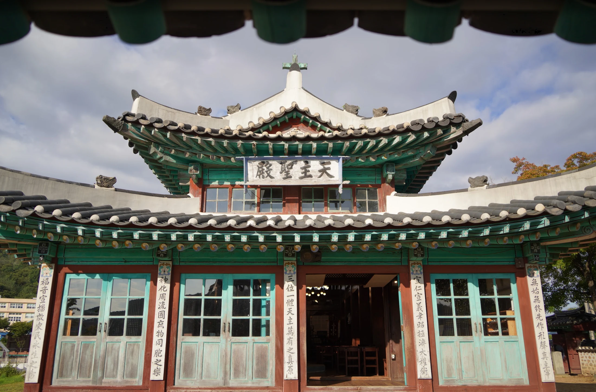
장소의 이름 너머,
그곳에 남은 마음을 읽습니다.
오래된 장소를 보고, 그곳의 이야기를 읽고,
오늘의 감각으로 기록합니다.
발로는 역사와 지역, 그 안에 남은 정신을 바탕으로 헤리티지를 바라봅니다. SILENT BLEND가 향으로 남기고자 한 첫 장소는 강화성당이었습니다. 한옥의 모습 안에 바실리카의 공간이 놓이고, 다른 전통에서 온 상징이 함께 머무는 곳. 발로는 그 어우러짐에서 배려와 존중이라는 태도를 읽었습니다.
‘Local History Perfume’라는 초기 프로젝트의 질문도 여기에 닿아 있습니다. 어떤 지역의 어떤 역사를 향으로 전할 것인가. 장소의 이름만 빌려오는 대신, 그곳에서 발견한 이야기와 향, 제품의 디자인이 함께 이어지기를 바랍니다.
문을 지나며,
서로 다른 형식이 만납니다.
외삼문과 내삼문을 차례로 지나 성당 안으로 들어갑니다. 입구의 십자가와 태극, 범종 형식을 닮은 종은 익숙한 형태가 새로운 쓰임을 얻는 장면입니다.

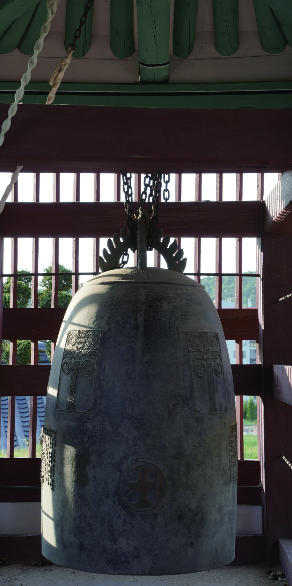
서양의 종교가 이곳에 자리 잡는 과정에서 익숙한 문과 종의 형식도 함께 쓰였습니다. 외삼문에서 내삼문으로 이어지는 길을 따라, 건축과 상징을 차례로 만납니다.
손을 씻는 일상으로 ↗한옥 안의 바실리카.
다름을 간직한 하나의 공간.
밖에서는 기와와 처마, 목재로 이루어진 한옥의 모습을 만납니다. 안으로 들어서면 가운데로 길게 열린 공간과 양옆 통로, 높은 내부를 가진 바실리카의 구성이 펼쳐집니다. 서로 다른 건축의 언어는 같은 건물 안에서 각각의 모습을 지니고 있습니다.
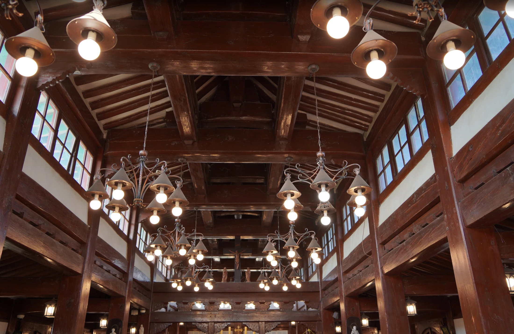
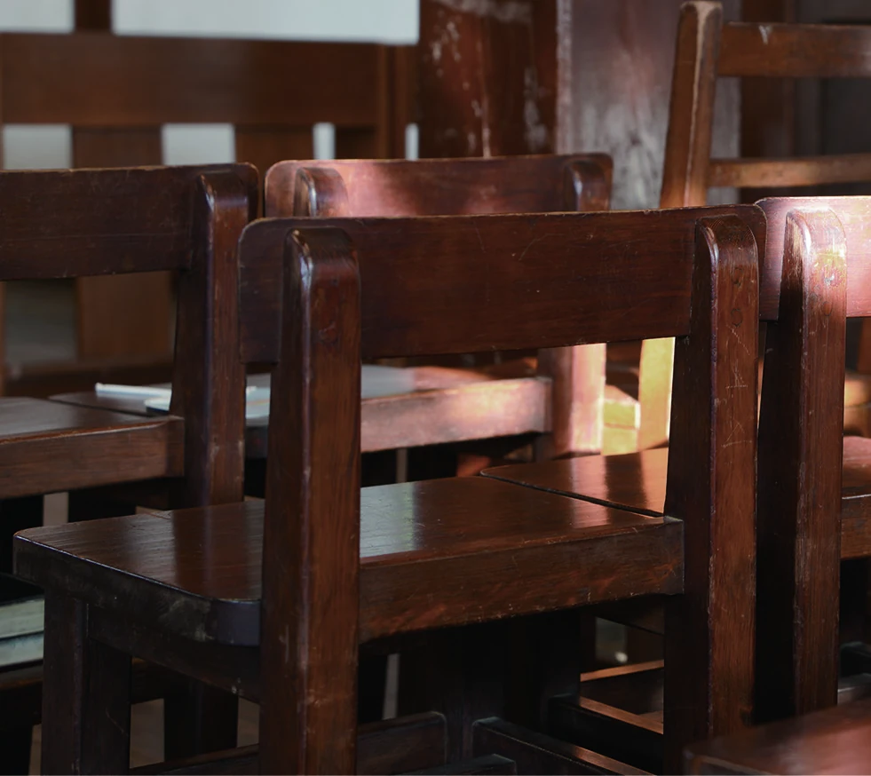
& quiet presence.
전통 살창과 아치, 기둥과 목재의 짜임을 차례로 바라봅니다. 높은 창에서 들어온 빛은 나무의 결을 드러냅니다. 의자와 십자가, 성상은 이곳이 지금도 쓰이는 예배 공간임을 보여줍니다.
SILENT BLEND의 우디한 중심은 두 나무의 이야기에서 얻은 영감과 함께, 이런 목재와 빛의 감각을 떠올리게 합니다.
용머리와 열두 제자.
하나의 형상, 겹쳐진 의미.
멀리서는 건축을 보고,
가까이에서는 그 안의 상징을 읽습니다.
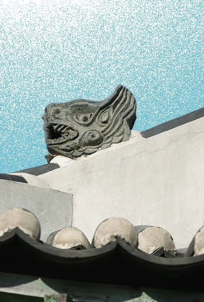
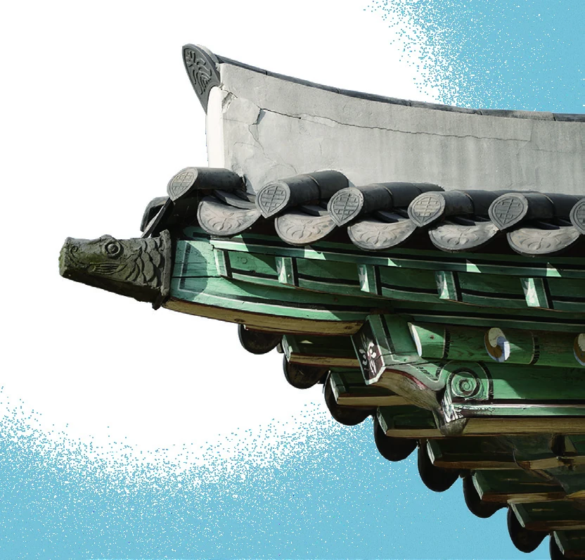
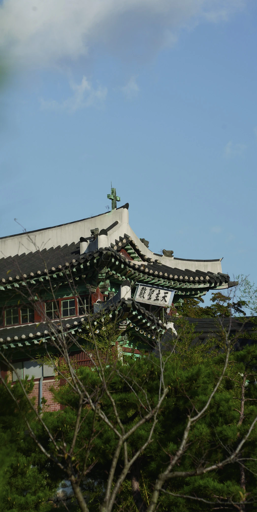
용머리 · 열두 제자
전통 건축에서 용머리는 악귀를 물리치고 공간을 지키려는 뜻과 연결되어 왔습니다. 발로의 책자는 이곳의 열두 용머리를 예수의 열두 제자와 연결해 소개합니다. 발로는 한 형상에 포개진 의미에서 문화가 관계를 맺는 모습을 읽었습니다.
물고기 · 길상
책자는 처마 끝 물고기 장식에서 전통의 풍요와 길상, 기독교의 상징을 함께 읽는 시선을 전합니다. 익숙한 형상을 다른 관점에서 다시 바라보게 합니다.
성당 · 방주
성당의 형상을 구원의 방주로 바라보는 해석도 건축의 형태와 신앙을 잇습니다. 건물을 바라보는 시선이 구조에서 상징으로 넓어집니다.
상징의 해석은 BALLO 책자에 따릅니다.
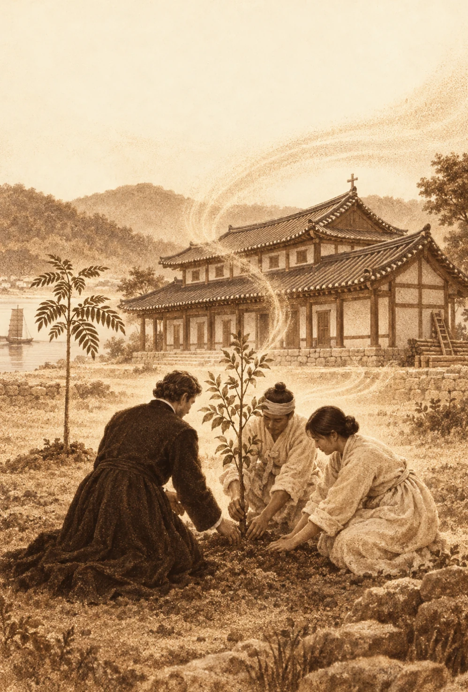
해당 이미지는 AI를 활용해 제작되었습니다.
함께 심었던 두 나무.
그 마음에서 시작된 향.
강화성당에는 서로 다른 전통을 상징하는 나무를 함께 심었던 이야기가 전해집니다. 기독교의 공간에 두 나무를 함께 심었던 선택에서, 발로는 배려와 존중의 의미를 읽었습니다.
공자와 유교를 상징하는 나무
부처와 불교를 상징하는 나무
다른 전통이 한 장소에 도착하고 함께 뿌리내리는 장면. 이 여정과 식재의 이야기는 SILENT BLEND가 우디한 향을 중심으로 완성되는 데 영감을 주었습니다.
원래의 회화나무는 태풍으로 쓰러졌습니다. 발로는 과거에 함께 심었던 선택과, 그 안에서 읽은 마음을 기억합니다.
함께 뿌리내린 선택.
그 이야기를 향으로 기억합니다.
이 모든 이야기가
향이 되기까지.
SILENT에는 조용히 머무는 태도를,
BLEND에는 서로 다른 요소가 어우러지는 모습을 담았습니다.
인센스를 떠올리게 하는,
차분하고 포근한 우디 향.
밝은 시트러스에서 부드러운 꽃향으로 이어집니다. 그 사이로 인센스를 떠올리게 하는 차분한 인상이 흐르고, 샌달우드와 바닐라, 머스크의 포근한 잔향이 남습니다.
밝게 열리는 첫인상
새로운 장소를 처음 마주하듯,
밝은 시트러스의 인상으로 문을 엽니다.
탠저린 · 베르가못 · 피치 · 유칼립투스
서로 다른 결이 만날 때
부드러운 꽃향 사이로 인센스를
떠올리게 하는 차분한 인상이 흐릅니다.
자스민 · 일랑일랑 · 튜베로즈 · 라브다넘
오래 기억하는 마음
샌달우드를 중심으로 바닐라와
머스크의 포근한 여운이 남습니다.
머스크 · 앰버 · 바닐라 · 패출리 · 샌달우드
향의 구성 / Fragrance Notes · 감각의 인상과 구성 원료의 명칭을 나누어 소개합니다.
취향을 반영한
유럽식 자개문양.
강화 쑥의 잎을 고전적인 장식 문양의 반복으로 풀었습니다.
자개를 떠올리는 섬세한 선과 명암을 인쇄 패턴으로 옮겨,
발로의 미적 취향과 지역의 소재를 한 상자에 담았습니다.
강화 쑥
강화 쑥의 잎에서 유기적인 선의 흐름을 가져왔습니다.

반복되는 문양
고전적인 장식의 반복 속에 잎의 형태를 놓았습니다.
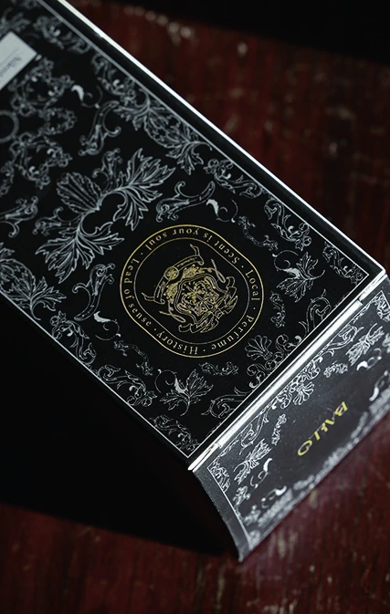
실제 패키지
제품을 감싸는 상자에 지역의 모티프와 문장을 함께 담았습니다.
쑥과 패턴 이미지는 책자의 모티프 설명 자료, 오른쪽은 제품 상자 사진입니다. 쑥은 디자인 모티프이며 제품의 함유 성분을 뜻하지 않습니다.
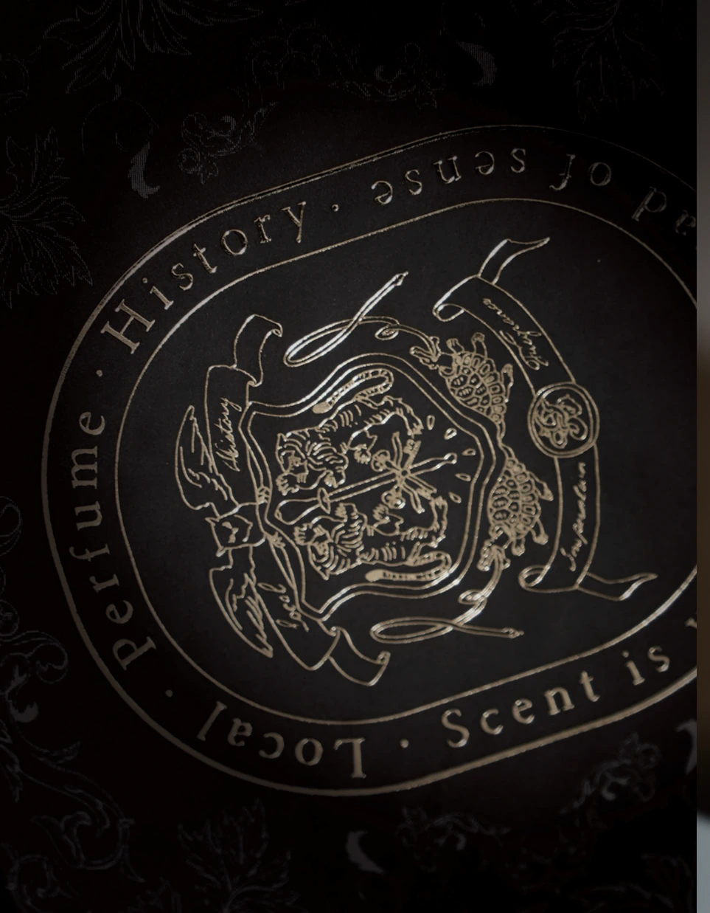
작은 문장에 담은
발로의 태도.
- 01올빼미
숨은 아름다움을 바라보는 지혜와 통찰.
- 02방패
타인을 지키는 신뢰와 책임, 용기.
- 03스포이드
각자의 취향과 독창성을 존중하며 향을 만드는 태도.
- 04호랑이
한국의 전통에서 출발하는 용기와 고귀함.
- 05열쇠
감추어진 세계로의 초대. 장롱 입구의 기억.
- 06현무
지혜와 차분함을 담은 상징.
- 07글자
발로의 기획에서는 Local · History · Inspiration · Fragrance를 지역과 역사를 향으로 옮기는 기준으로 정리했습니다.
- 08BALLO 심볼
조언과 애정을 나눈 사람들에게 보내는 감사.
영감을 받은 공간을
고스란히 반영한 디자인.
한옥의 짜임은 라벨의 윤곽으로,
용머리와 기와는 그 안의 문양으로 옮겼습니다.
공간의 형태가
제품의 디테일로.
목재 짜임 → 라벨 윤곽
나무를 짜 맞추는 구조에서 출발한 각진 윤곽. 공간을 이루는 선을 제품의 테두리에 담았습니다.
용머리 → 내부 문양
공간을 지키는 형상과 열두 제자의 해석. 한 장식에 겹쳐진 의미를 라벨 안으로 옮겼습니다.
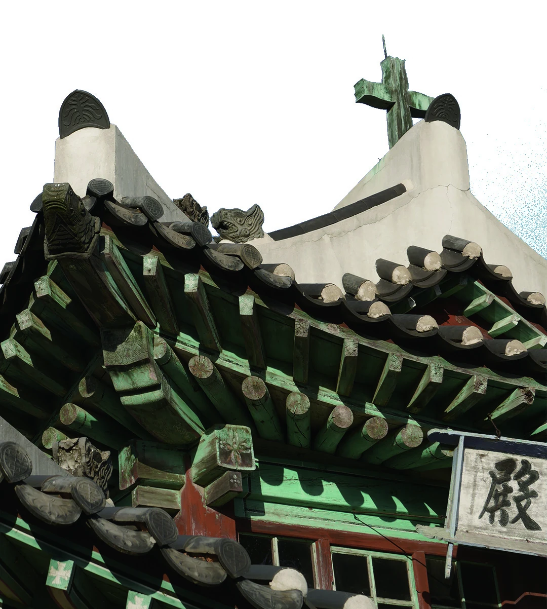
기와 → 반복되는 선
지붕 위에 이어지는 기와의 리듬. 과거에서 현재로 이어지는 시간의 인상을 문양에 남겼습니다.
제품 밖에서도 읽을거리는 계속됩니다. 책자와 감사의 기록은 향의 배경을 전하는 또 하나의 방식입니다. 발로의 시작과, 그 과정에 함께한 사람들의 이야기를 다음 장에서 소개합니다.
몸에, 공간에, 손끝에.
향을 만나는 여섯 자리.
개인
몸 가까이에서 만나는 우디한 향의 여운.
집
오늘 머무는 방에 남기는 여행의 기억.
스테이
머무는 공간에서 만나게 될 작은 감각.
리테일
매장에서 함께 전하는 지역의 이야기.
선물
감사의 마음과 함께 건네는 향.
문화 · 전시
향을 통해 다시 바라보는 장소와 유산.
About BALLO
유산을 향으로 기록하다.
개항로의 작은 공간에서 시작된 발견의 경험. 발로의 이름과 시작, 향으로 기록하는 이야기를 소개합니다.
About BALLOSILENT BLEND를
함께 전합니다.
매장에 소개할 제품을 찾거나, 기업·기관의 선물을 준비하고 있다면 문의해 주세요. 현재 판매 중인 제품을 기존 패키지로 납품합니다.
현재 포장 맞춤은 제공하지 않습니다.